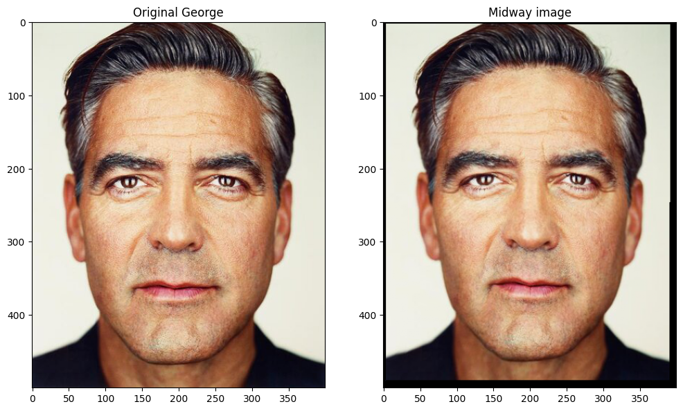
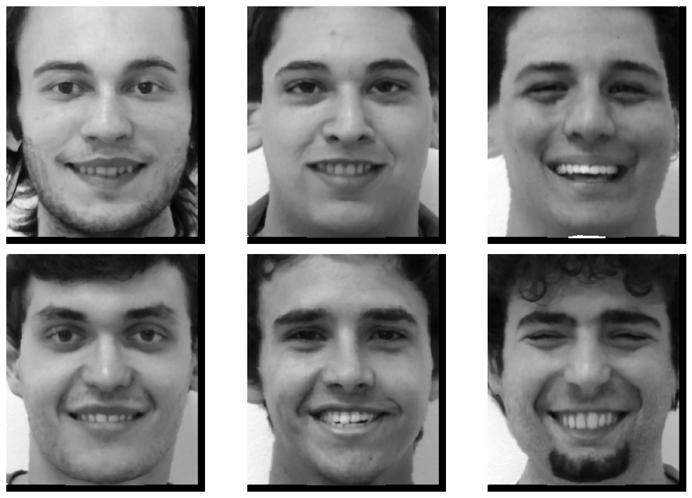
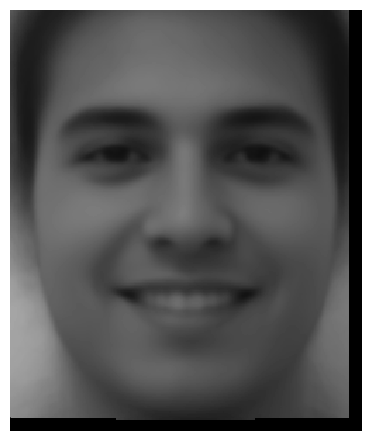
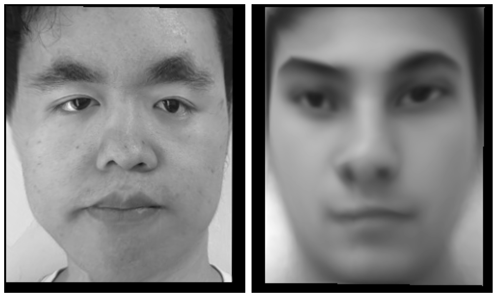

Project 3: Face Morphing
In this project, our focus was to learn how to “morph” and transform features from one image to another, by mapping corresponding keypoints of both images.
Part 1: Defining Correspondences
To start, I used the george.jpg image that was given to us initially, and I also
chose to use another one of Martin Schoeller’s pictures of Robert Deniro (named
deniro.jpg as my second picture. Then, I used the labeling tool provided to us in
the project spec in order to perform this part.
For this part, I defined a total of 38 pairs of points aligning sailing
features on both faces, then exported them to a .json file. Then, I defined a
triangulation on these points, by using scipy.spatial.Delaunay to generate the
triangular mesh that I would be using to compute the transform (this is explained in
further detail in the next section)
As a visual, below are the two original images, with the corresponding points overlaid on top of them:

Part 2: Computing the “Mid-way Face”
To compute the midway face, I took the corresponding points of both deniro.jpg and
george.jpg given to me by the correspondence tool, and computed the average between
these two to get the average location of the facial features. Then, I computed a
triangular mesh over this average space using scipy.spatial.Delaunay.
Then, we move on to computing the transformation matrix. I found Bill’s comment on ed to be particularly helpful in developing the theory behind generating the matrix \(A\). In summary, we effectively want to find a matrix \(A\) such that:
\[\begin{bmatrix} a & b & c\\ d & e & f \\ 0 & 0 & 1 \end{bmatrix} \begin{bmatrix} x \\ y \\ 1 \end{bmatrix} = \begin{bmatrix} x' \\ y' \\ 1 \end{bmatrix}\]where \((x, y)\) are the coordinates in the original image, and \((x', y')\) are our coordinates in the mean image. In our case, we do this for every triangle in our image, and apply the same transformation to every point in the triangle. To find the matrix \(A\), we then effectively just have to solve a large system of equations, since we have the above relation for the three corners of our triangle. This process can effectively be boiled down to solving the following linear equation:
\[\begin{bmatrix} p_{x_1} & p_{y_1} & 1 & 0 & 0 & 0\\ 0 & 0 & 0 & p_{x_1} & p_{y_1} & 1 \\ p_{x_2} & p_{y_2} & 1 & 0 & 0 & 0 \\ 0 & 0 & 0 & p_{x_2} & p_{y_2} & 1 \\ p_{x_3} & p_{y_3} & 1 & 0 & 0 & 0\\ 0 & 0 & 0 & p_{x_3} & p_{y_3} & 1 \end{bmatrix} \begin{bmatrix} a\\b\\c\\d\\e\\f \end{bmatrix} = \begin{bmatrix} q_{x_1} \\ q_{y_1}\\ q_{x_2} \\ q_{y_2} \\ q_{x_3} \\ q_{y_3} \end{bmatrix}\]which will give us the values of \(a\) through \(f\).
This can be solved using np.linalg.solve(a, b), which finds these values. With
\(A\) found, we now turn to the implementation of the transformation onto the image.
Now, consider one triangle in the mean image, for which we have the transformation
matrix \(A\) between it and its corresponding triangle in the original image. To fill
in the color values, we first find the coordinates of every pixel within the
triangle, and use \(A^{-1}\) to determine the corresponding point in the original
image. Once this is found, we can use scipy.interpolate.RegularGridInterpolator() to
perform a nearest-neighbor interpolation, telling us the color value of the pixel in
the mean image. We do this for each color channel separately, and combine them
together to get the morphed image. Doing so, we get the following results:


Due to the similarity in both images, it’s not very easy to tell that the morph actually had a noticeable effect on the original images. However, there are some small differences that you can notice: in the morphed image, George’s left eye (his left) looks smaller, and the overall face shape seems to be more narrow. On the contrary, we can see somewhat the opposite effects on Robert, as his face seems to have gotten slightly wider. To see these differences more clearly, we turn to the next section.
Part 3: The Morph Sequence
Here, we turn to creating a morph sequence, which just shows the progression from one
image to the other. In doing so, we can also highlight the differences between the
images more clearly, and also the differences between the original images and the
midway image. To do this, we repeatedly compute a weighted midway image between the
two images, and also cross-dissolve the image colors together to produce a sequence
of midway images. Then, these are all combined together to create a .gif, displayed
below. Note that in my implementation, I let warp_frac and dissolve_frac (the two
parameters which control the warp and dissolve rates) equal the same value, which was
a conscious decision.

Github pages doesn’t allow me to show gifs this large, so you’ll either have to download it or view it using this link. Here, we can see the differences between the two images more clearly, and the transformation from one to the other also tells us that the differences we noticed in the previous section were real and a result of the morphing, not a visual illusion.
Part 4: Average Population Face
In this section, we compute the average face of a large collection of portraits. For this part, I chose to use the FEI database, and I specifically chose to use a subset of the data – specifically, only smiling men. To determine the images we need, we manually sift through the total database of images to determine which images match our criteria, then get the corresponding points for them. (I do have to credit Steven Luo with going through and finding the indices that corresponded to males in the database; we only shared the index information, no computational code was shared.) With all the points gathered, we can compute a mean face by taking the average of all the feature points, and performing the morph on some of the images to the mean face, we get this:

Then, we can simply take the average of all these mean images, in order to come to an image of the mean smiling face, which is pictured below:

The last part of this task is to perform the same morph using a photo of me. The image I took of myself that I used for the previous part is a resting face, so I decided instead of taking another photo of myself (I really don’t like taking photos of myself), I’ll just process the resting faces as well and morph to that instead. So, I took the following set of correspondences between my resting face and the average resting face (computed in the same way as in the previous part):

Then, we can just compute the morph using the same compute_midway function that
I’ve implemented in part 2, giving us:

To be honest, the distortions make sense, since my face does not really resemble the mean face computed at all – the ethnicity of the selected people were Brazilian, and obviously I’m not, so there should be no expectation that our face structures line up well. As a result, we get some serious warping between the two. I also verified that adding more correspondence points doesn’t really seem to help that much.
Part 5: Extrapolating from the Mean
To create the caricature, what we need to do is essentially control how much of the
mean face we are using when extrapolating my face. In other words, we have a variable
alpha that controls how much of the morph shifts in the direction of the mean
image. An alpha value of 0 means no morphing, an alpha of 1 means to morph
exactly into the mean image. This is reflected in the image below:

Just like the previous part, this extrapolation of my face using the mean does distort my face, which makes sense since we already talked earlier about how my face doesn’t really match the mean face well.
Bells and Whistles: Changing Ethnicity
For the Bells and Whistles part, I decided to try and morph my face onto that of an average Korean man. For this part, I needed another image of myself, and luckily I dug up an old passport photo I took and used that for this part. If you’re wondering why I didn’t do this for earlier parts, that’s because I completely forgot this photo existed until I started this section. Anyways, here are the original images I worked with:

And here’s what I ended up with:

For these images I used warp_frac = 0.6 and dissolve_frac = 0.6, instead of
maxing them out. The reason for this was that I found this gave a better blending of
the two images. I also shouldn’t turn it all the way either, since that would just be
a pure warping anyways.